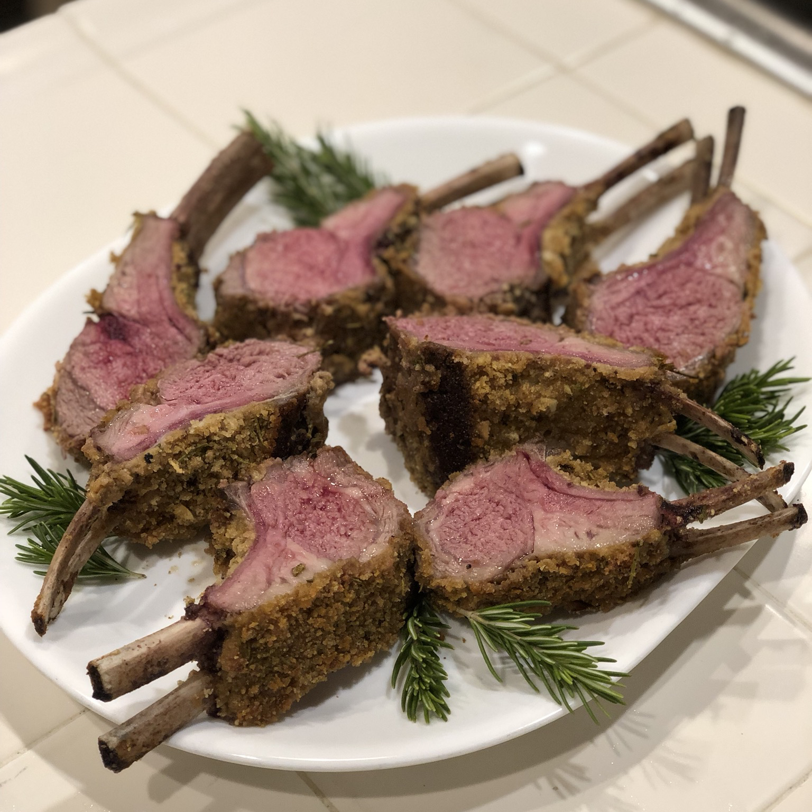

Roasted Rack of Lamb

Description
Roasted rack of lamb recipe from allrecipes.com,
which is a great choice for easter.
Ingredients
- ½ cup fresh bread crumbs
- 2 tablespoons minced garlic
- 2 tablespoons chopped fresh rosemary
- 1 teaspoon salt
- ¼ teaspoon black pepper
- 2 tablespoons olive oil
- 1 (7 bone) rack of lamb, trimmed and frenched
- 1 teaspoon salt
- 1 teaspoon black pepper
- 2 tablespoons olive oil
- 1 tablespoon Dijon mustard
Steps
- Preheat oven to 450 degrees F (230 degrees C). Move oven rack to the center position.
- In a large bowl, combine bread crumbs, garlic, rosemary, 1 teaspoon salt and 1/4 teaspoon pepper.
Toss in 2 tablespoons olive oil to moisten mixture. Set aside.
- Season the rack all over with salt and pepper. Heat 2 tablespoons olive oil in a large heavy oven
proof skillet over high heat. Sear rack of lamb for 1 to 2 minutes on all sides. Set aside for a
few minutes. Brush rack of lamb with the mustard. Roll in the bread crumb mixture until evenly coated.
Cover the ends of the bones with foil to prevent charring.
- Arrange the rack bone side down in the skillet. Roast the lamb in preheated oven for 12 to 18 minutes,
depending on the degree of doneness you want. With a meat thermometer, take a reading in the center of
the meat after 10 to 12 minutes and remove the meat, or let it cook longer, to your taste. Let it rest
for 5 to 7 minutes, loosely covered, before carving between the ribs.